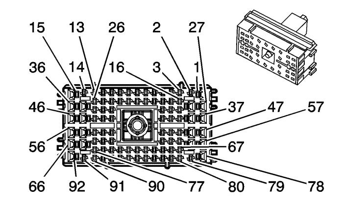
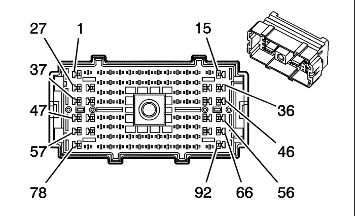

Captiva |
||||||||
|
|
|
|||||||
|
 |
 |
Información de parte de conector
| Información de parte de conector
|
Bulón | Tamaño | Color | Circuito | Opción | Función | Bulón | Tamaño | Color | Circuito | Opción |
|---|---|---|---|---|---|---|---|---|---|---|
1 | 0.35 | BN/WH | 771 | M98/C105/Volante a la derecha | Señal del interruptor de la gama de marchas A | 1 | 0.35 | BN/WH | 771 | M98/C105/Volante a la derecha |
0.35 | GY/BK | 2508 | UU8/UCY | Señal del micrófono | 0.35 | GY/BK | 2508 | UU8/UCY | ||
2 | 0.35 | L-GN | 200 | -- | Altavoz delantero derecho (+) (1) | 2 | 0.35 | L-GN | 200 | -- |
3 | 0.35 | D-GN | 117 | -- | Señal de altavoz delantero derecho (-) (1) | 3 | 0.35 | D-GN | 117 | -- |
4 | 0.35 | L-BU | 5362 | AF8 | Señal de activación de la alarma de inclinación | 4 | 0.35 | L-BU | 5362 | AF8 |
5 | 0.35 | L-BU | 772 | M98/C100/Volante a la derecha | Señal del interruptor de la gama de marchas B | 5 | 0.35 | L-BU | 772 | M98/C100/Volante a la derecha |
0.35 | BN/BK | 5168 | C105 | Señal de activación de la sonda de alimentación | 0.35 | BN/BK | 5168 | C105 | ||
0.35 | BN/WH | 6433 | UCY | Datos de serie de bus CAN de alta velocidad | 0.35 | BN/WH | 6433 | UCY | ||
6 | 0.35 | GY | 5248 | UD7 | Referencia baja de la alarma de estacionamiento asistido | 6 | 0.35 | GY | 5248 | UD7 |
0.35 | BN | 5910 | C105 | Control de bloqueo del actuador de cierre doble de la puerta | 0.35 | BN | 5910 | C105 | ||
7 | 0.35 | OG | 1525 | M98/C105/Volante a la derecha | Control alto de la válvula magnética 1 del control de presión del embrague | 7 | 0.35 | OG | 1525 | M98/C105/Volante a la derecha |
0.35 | YE | 5247 | UD7 | Señal de alarma de estacionamiento asistido | 0.35 | YE | 5247 | UD7 | ||
8 | 0.35 | PU | 1319 | UD7 | Línea K de datos serie del motor/radio | 8 | 0.35 | PU | 1319 | UD7 |
0.35 | OG | 1525 | M98/C100/Volante a la derecha | Control alto de la válvula magnética 1 del control de presión del embrague | 0.35 | OG | 1525 | M98/C100/Volante a la derecha | ||
9 | 0.35 | PK | 5068 | C105/Volante a la derecha | Señal de desactivación del interruptor del sensor de intrusión | 9 | 0.35 | PK | 5068 | C105/Volante a la derecha |
0.35 | BN/BK | 6724 | -- | Señal del interruptor de la bomba del lavafaros | 0.35 | BN/BK | 6724 | -- | ||
10 | 0.35 | L-BU | 6844 | F45 | Control de descenso por pendientes ABS/TCS | 10 | 0.35 | L-BU | 6844 | F45 |
11 | -- | BN/WH | 312 | C105/Volante a la derecha | Tensión de alimentación de luz de cruce del faro delantero derecho | 11 | -- | BN/WH | 312 | C105/Volante a la derecha |
0.35 | GY | 773 | M98/C100/Volante a la derecha | Señal del interruptor de la gama de marchas C | 0.35 | GY | 773 | M98/C100/Volante a la derecha | ||
0.35 | GY/BK | 7043 | -- | Micrófono (+) | 0.35 | GY/BK | 7043 | -- | ||
12 | 0.35 | WH | 776 | M98/C100/Volante a la derecha | Señal del interruptor de la gama de marchas P | 12 | 0.35 | WH | 776 | M98/C100/Volante a la derecha |
0.35 | WH | 9003 | C105/Volante a la derecha | Cable de drenaje | 0.35 | WH | 9003 | C105/Volante a la derecha | ||
13 | 0.35 | BN | 201 | -- | Altavoz delantero izquierdo (+) (1) | 13 | 0.35 | BN | 201 | -- |
14 | 0.35 | GY | 118 | -- | Señal del altavoz delantero izquierdo (-) (1) | 14 | 0.35 | GY | 118 | -- |
15 | 0.35 | L-BU | 20 | -- | Tensión de alimentación de la luz de parada | 15 | 0.35 | L-BU | 20 | -- |
16 | 0.35 | D-BU | 46 | -- | Altavoz trasero derecho (+) | 16 | 0.35 | D-BU | 46 | -- |
17 | 0.35 | L-BU | 115 | -- | Señal del altavoz trasero derecho (-) | 17 | 0.35 | L-BU | 115 | -- |
18 | 0.35 | YE | 116 | -- | Señal de altavoz trasero izquierdo (-) | 18 | 0.35 | YE | 116 | -- |
19 | 0.35 | PU/WH | 5203 | -- | Señal del sensor de calidad del aire | 19 | 0.35 | PU/WH | 5203 | -- |
20 | 0.35 | GY | 391 | -- | Señal del interruptor del limpiador de la ventanilla trasera | 20 | 0.35 | GY | 391 | -- |
21 | 0.35 | D-GN/WH | 636 | -- | Señal del sensor de temperatura del aire ambiente exterior | 21 | 0.35 | D-GN/WH | 636 | -- |
22 | 0.35 | OG/BK | 645 | -- | Referencia baja | 22 | 0.35 | OG/BK | 645 | -- |
23 | 0.35 | WH | 193 | -- | Control del relé del desempañador trasero | 23 | 0.35 | WH | 193 | -- |
24 | 0.35 | D-GN | 189 | -- | Tensión de alimentación del motor de nivelación de faros | 24 | 0.35 | D-GN | 189 | -- |
25 | 0.35 | BN/WH | 312 | sin C105/Volante a la derecha | Tensión de alimentación de luz de cruce del faro delantero derecho | 25 | 0.35 | BN/WH | 312 | sin C105/Volante a la derecha |
26 | 0.35 | GY | 6137 | -- | Señal del sensor de temperatura de núcleo EVAP | 26 | 0.35 | GY | 6137 | -- |
27 | 0.35 | OG | 1732 | -- | Referencia de 12 V de la unidad de control electrónico (3) | 27 | 0.35 | OG | 1732 | -- |
28 | 0.35 | WH | 639 | M98/C105/Volante a la derecha | Sonda eléctrica | 28 | 0.35 | WH | 639 | M98/C105/Volante a la derecha |
0.35 | WH | 9003 | AF8/C100/Volante a la derecha | Cable de drenaje | 0.35 | WH | 9003 | AF8/C100/Volante a la derecha | ||
29 | 0.35 | YE | 18 | -- | Tensión de alimentación de la luz de parada/intermitente trasera izquierda | 29 | 0.35 | YE | 18 | -- |
30 | 0.35 | BN/WH | 379 | MFN | Señal del interruptor de posición del pedal del embrague del control de velocidad | 30 | 0.35 | BN/WH | 379 | MFN |
31 | 0.35 | D-BU | 5985 | M98/C105/Volante a la derecha | Daros de serie de activación de accesorios | 31 | 0.35 | D-BU | 5985 | M98/C105/Volante a la derecha |
32 | 0.35 | BN | 1149 | C105/Volante a la derecha | Control de la bocina antirrobo | 32 | 0.35 | BN | 1149 | C105/Volante a la derecha |
0.35 | YE | 1496 | -- | Control hacia la derecha/arriba del motor del espejo | 0.35 | YE | 1496 | -- | ||
33 | 0.35 | BN | 333 | -- | Señal del sensor de nivel del líquido de frenos | 33 | 0.35 | BN | 333 | -- |
34 | 0.35 | PU/WH | 5754 | U88 | Control de altavoz de graves del amplificador (1) | 34 | 0.35 | PU/WH | 5754 | U88 |
35 | 0.35 | TN/BK | 2500 | -- | Datos de serie GMLAN de alta velocidad (+) (1) | 35 | 0.35 | TN/BK | 2500 | -- |
36 | 0.35 | PU | 1703 | NV8 | Control del solenoide de sensibilidad a la velocidad de la dirección de esfuerzo variable | 36 | 0.35 | PU | 1703 | NV8 |
37 | 0.35 | YE | 772 | M98/C105/Volante a la derecha | Señal del interruptor de la gama de marchas B | 37 | 0.35 | YE | 772 | M98/C105/Volante a la derecha |
0.35 | PK | 5068 | AF8/C100/Volante a la derecha | Señal de desactivación del interruptor del sensor de intrusión | 0.35 | PK | 5068 | AF8/C100/Volante a la derecha | ||
38 | 0,5 | RD/WH | 2440 | M98/C105/Volante a la derecha | Voltaje positivo de batería | 38 | 0,5 | RD/WH | 2440 | M98/C105/Volante a la derecha |
0.35 | BN/BK | 5168 | AF8/C100/Volante a la derecha | Señal de activación de la sonda de alimentación | 0.35 | BN/BK | 5168 | AF8/C100/Volante a la derecha | ||
39 | 0.35 | L-BU | 659 | C105/Volante a la derecha | Referencia baja de voz del teléfono móvil | 39 | 0.35 | L-BU | 659 | C105/Volante a la derecha |
0.35 | GY | 2373 | -- | Control del indicador rojo de estacionamiento asistido trasero | 0.35 | GY | 2373 | -- | ||
40 | 0.35 | BU | 658 | C105/Volante a la derecha | Señal de voz del teléfono móvil | 40 | 0.35 | BU | 658 | C105/Volante a la derecha |
0.35 | PK/BK | 5755 | -- | Control de altavoz de graves del amplificador (2) | 0.35 | PK/BK | 5755 | -- | ||
41 | 0.35 | BN | 1271 | -- | Referencia baja de posición del pedal del acelerador (1) | 41 | 0.35 | BN | 1271 | -- |
42 | 0.35 | WH/BK | 1164 | -- | Referencia de 5 voltios de posición del pedal del acelerador (1) | 42 | 0.35 | WH/BK | 1164 | -- |
43 | 0.35 | L-BU | 1162 | -- | Señal de posición del pedal del acelerador (2) | 43 | 0.35 | L-BU | 1162 | -- |
44 | 0.35 | BN | 1274 | -- | Referencia de 5 voltios de posición del pedal del acelerador (2) | 44 | 0.35 | BN | 1274 | -- |
45 | 0.35 | TN | 2501 | -- | Datos de serie GMLAN de alta velocidad (-) (1) | 45 | 0.35 | TN | 2501 | -- |
46 | 0.35 | L-BU | 1738 | -- | Tensión de alimentación del solenoide de sensibilidad a la velocidad de la dirección de esfuerzo variable | 46 | 0.35 | L-BU | 1738 | -- |
47 | 0.35 | GY/BK | 690 | C100/Volante a la derecha | Control del relé de las luces de cortesía | 47 | 0.35 | GY/BK | 690 | C100/Volante a la derecha |
0.35 | WH | 776 | M98/C105/Volante a la derecha | Señal del interruptor de la gama de marchas P | 0.35 | WH | 776 | M98/C105/Volante a la derecha | ||
48 | 0.35 | GY | 773 | M98/C105/Volante a la derecha | Señal del interruptor de la gama de marchas C | 48 | 0.35 | GY | 773 | M98/C105/Volante a la derecha |
0.35 | BN | 5910 | -- | Luz antiniebla del remolque | 0.35 | BN | 5910 | -- | ||
49 | 0.35 | PU | 1272 | -- | Referencia baja de posición del pedal del acelerador (2) | 49 | 0.35 | PU | 1272 | -- |
50 | 0.35 | D-BU | 1161 | -- | Señal de posición del pedal del acelerador (1) | 50 | 0.35 | D-BU | 1161 | -- |
51 | 0.35 | BN | 199 | -- | Altavoz trasero izquierdo (+) | 51 | 0.35 | BN | 199 | -- |
52 | 0.35 | BN/WH | 99 | -- | Señal del sensor de nivel del líquido del lavaparabrisas | 52 | 0.35 | BN/WH | 99 | -- |
53 | 0.35 | WH | 81 | C100/Volante a la derecha | Control hacia la derecha del motor del espejo retrovisor izquierdo | 53 | 0.35 | WH | 81 | C100/Volante a la derecha |
0.35 | BN | 1391 | C105/Volante a la derecha | Control del relé de desbloqueo de la puerta del conductor | 0.35 | BN | 1391 | C105/Volante a la derecha | ||
54 | 0.35 | L-GN | 89 | -- | Control hacia abajo del motor del espejo retrovisor izquierdo | 54 | 0.35 | L-GN | 89 | -- |
0.35 | GN/WH | 5842 | C105/Volante a la derecha | Pantalla de audio auxiliar (2) | 0.35 | GN/WH | 5842 | C105/Volante a la derecha | ||
55 | 0.35 | BU | 6253 | M98/C100/Volante a la derecha | Referencia baja | 55 | 0.35 | BU | 6253 | M98/C100/Volante a la derecha |
56 | 0.35 | TN | 2501 | -- | Datos de serie GMLAN de alta velocidad (-) (1) | 56 | 0.35 | TN | 2501 | -- |
57 | -- | WH/BK | 910 | -- | Señal de solicitud del calefactor de PTC | 57 | -- | WH/BK | 910 | -- |
0.35 | WH | 1310 | NQU | Control del solenoide de ventilación del depósito EVAP | 0.35 | WH | 1310 | NQU | ||
58 | 0,5 | RD/WH | 540 | -- | Voltaje positivo de batería | 58 | 0,5 | RD/WH | 540 | -- |
59 | 0.35 | OG/WH | 881 | C100/Volante a la derecha | Control hacia la derecha del motor del espejo retrovisor derecho | 59 | 0.35 | OG/WH | 881 | C100/Volante a la derecha |
0.35 | BN/WH | 5169 | C105/Volante a la derecha | Bus de datos + de serie GMLAN de velocidad media | 0.35 | BN/WH | 5169 | C105/Volante a la derecha | ||
60 | 0.35 | PU/WH | 889 | C100/Volante a la derecha | Control hacia abajo del motor del espejo retrovisor derecho | 60 | 0.35 | PU/WH | 889 | C100/Volante a la derecha |
0.35 | BN | 5170 | C105/Volante a la derecha | Bus de datos - de serie GMLAN de velocidad media | 0.35 | BN | 5170 | C105/Volante a la derecha | ||
61 | 0.35 | GY | 324 | C100/Volante a la derecha | Tensión de alimentación de la bobina del relé de la palanca de cambios | 61 | 0.35 | GY | 324 | C100/Volante a la derecha |
0.35 | L-GN | 5839 | C105/Volante a la derecha | Señal auxiliar de audio izquierda (2) | 0.35 | L-GN | 5839 | C105/Volante a la derecha | ||
62 | 0.35 | PU | 328 | -- | Señal del interruptor de anulación de la luz interior | 62 | 0.35 | PU | 328 | -- |
63 | 0.35 | BN | 4 | -- | Tensión accesoria | 63 | 0.35 | BN | 4 | -- |
64 | 0.35 | D-BU | 6189 | -- | Señal de desbloqueo interior del maletero/luna trasera | 64 | 0.35 | D-BU | 6189 | -- |
65 | 0.35 | WH | 5190 | C105 | Luz antiniebla del remolque | 65 | 0.35 | WH | 5190 | C105 |
0.35 | BN/WH | 6254 | M98/C100/Volante a la derecha | Señal del sensor de revoluciones de entrada | 0.35 | BN/WH | 6254 | M98/C100/Volante a la derecha | ||
66 | 0.35 | D-BU | 5992 | C105 | Señal de remolque conectado | 66 | 0.35 | D-BU | 5992 | C105 |
67 | 0.35 | BN/WH | 585 | C100/Volante a la derecha | Señal del sensor de temperatura del líquido de la transmisión | 67 | 0.35 | BN/WH | 585 | C100/Volante a la derecha |
0.35 | BN | 28 | C105 | Control del relé de la bocina | 0.35 | BN | 28 | C105 | ||
0.35 | YE | 1860 | UV8/UCY | Altavoz central delantero (+) | 0.35 | YE | 1860 | UV8/UCY | ||
68 | 0.35 | BN | 28 | C100 | Control del relé de la bocina | 68 | 0.35 | BN | 28 | C100 |
0.35 | GN/WH | 5841 | C105 | Señal auxiliar de audio derecha (2) | 0.35 | GN/WH | 5841 | C105 | ||
69 | 0.35 | GN/WH | 762 | -- | Señal requerida del A/A | 69 | 0.35 | GN/WH | 762 | -- |
70 | 0.35 | PK/BK | 5501 | M98/C100/Volante a la derecha | Control alto de válvula magnética de activación del embrague del convertidor de par | 70 | 0.35 | PK/BK | 5501 | M98/C100/Volante a la derecha |
0.35 | YE | 5842 | C105/Volante a la izquierda | Pantalla de audio auxiliar (2) | 0.35 | YE | 5842 | C105/Volante a la izquierda | ||
71 | 0.35 | BU/WH | 5502 | M98/C100/Volante a la derecha | Control bajo de válvula magnética de activación del embrague del convertidor de par | 71 | 0.35 | BU/WH | 5502 | M98/C100/Volante a la derecha |
72 | 0.35 | BU | 1530 | M98/C100/Volante a la derecha | Control del solenoide de presión de la línea principal de la transmisión | 72 | 0.35 | BU | 1530 | M98/C100/Volante a la derecha |
0.35 | BN/WH | 6547 | C105 | Señal de temperatura del módulo de la batería (11) | 0.35 | BN/WH | 6547 | C105 | ||
73 | 0.35 | L-BU | 5986 | -- | Habilitación de comunicación de datos de serie | 73 | 0.35 | L-BU | 5986 | -- |
74 | 0.35 | GN/WH | 817 | C105 | Señal de velocidad del vehículo | 74 | 0.35 | GN/WH | 817 | C105 |
0.35 | WH | 5503 | M98/C100/Volante a la derecha | Referencia baja del solenoide de presión de la línea principal de la transmisión | 0.35 | WH | 5503 | M98/C100/Volante a la derecha | ||
75 | 0.35 | BN | 323 | C100/Volante a la derecha | Tensión de alimentación del solenoide del cambio | 75 | 0.35 | BN | 323 | C100/Volante a la derecha |
0.35 | YE/BK | 693 | C105 | Señal de silenciamiento del teléfono móvil | 0.35 | YE/BK | 693 | C105 | ||
76 | 0.35 | PK | 1963 | -- | Control del relé del motor de extensión de los espejos plegables | 76 | 0.35 | PK | 1963 | -- |
77 | 0.35 | BN | 683 | -- | Tensión de alimentación del indicador del desempañador trasero | 77 | 0.35 | BN | 683 | -- |
78 | 0.35 | GN/BK | 690 | C105 | Tensión de alimentación de la luz de cortesía | 78 | 0.35 | GN/BK | 690 | C105 |
79 | 0.35 | L-GN | 24 | UCY | Tensión de alimentación de la lámpara de respaldo | 79 | 0.35 | L-GN | 24 | UCY |
0.35 | BN/BK | 6357 | C100/Volante a la derecha | Señal apantallada de revoluciones de salida | 0.35 | BN/BK | 6357 | C100/Volante a la derecha | ||
0.35 | WH | 9004 | C105 | Cable blindado | 0.35 | WH | 9004 | C105 | ||
80 | 0.35 | PK | 3022 | F45 | Control bajo de la fase 2 del módulo del volante | 80 | 0.35 | PK | 3022 | F45 |
81 | 0.35 | WH | 3023 | F45 | Control alto del estado 2 del módulo del volante | 81 | 0.35 | WH | 3023 | F45 |
82 | 0.35 | L-BU | 187 | -- | Señal del interruptor de los faros antiniebla traseros | 82 | 0.35 | L-BU | 187 | -- |
83 | 0.35 | L-BU | 2088 | -- | Referencia baja del sensor inercial del vehículo combinado | 83 | 0.35 | L-BU | 2088 | -- |
84 | 0.35 | D-GN | 2087 | -- | Tensión de alimentación del sensor inercial del vehículo combinado | 84 | 0.35 | D-GN | 2087 | -- |
85 | 0.35 | BN/WH | 771 | M98/C100/Volante a la derecha | Señal del interruptor de la gama de marchas A | 85 | 0.35 | BN/WH | 771 | M98/C100/Volante a la derecha |
0.35 | BN | 5852 | C105 | Señal de desactivación del LED de estacionamiento asistido trasero | 0.35 | BN | 5852 | C105 | ||
86 | 0.35 | OG/BK | 586 | M98/C100/Volante a la derecha | Referencia baja del sensor de temperatura del líquido de la transmisión | 86 | 0.35 | OG/BK | 586 | M98/C100/Volante a la derecha |
0.35 | L-BU | 1960 | UV8/UCY | Altavoz central delantero (-) | 0.35 | L-BU | 1960 | UV8/UCY | ||
0.35 | GN | 2555 | C105 | Señal de desactivación del estacionamiento asistido trasero | 0.35 | GN | 2555 | C105 | ||
87 | 0.35 | D-GN/WH | 817 | -- | Señal de velocidad del vehículo | 87 | 0.35 | D-GN/WH | 817 | -- |
88 | 0.35 | BN/WH | 753 | -- | Señal alta del módulo del volante | 88 | 0.35 | BN/WH | 753 | -- |
89 | 0.35 | OG/BK | 752 | -- | Señal baja del módulo del volante | 89 | 0.35 | OG/BK | 752 | -- |
90 | 0.35 | D-BU | 903 | C100/UD7 | Referencia de tensión de la alarma de estacionamiento asistido | 90 | 0.35 | D-BU | 903 | C100/UD7 |
91 | 0.35 | L-BU | 1134 | UCY | Señal del interruptor del freno de mano | 91 | 0.35 | L-BU | 1134 | UCY |
0.35 | PK | 6358 | C100/Volante a la derecha | Señal de revoluciones de salida | 0.35 | PK | 6358 | C100/Volante a la derecha | ||
92 | 0.35 | TN/BK | 2500 | -- | Datos de serie GMLAN de alta velocidad (+) | 92 | 0.35 | TN/BK | 2500 | -- |
| © Copyright Chevrolet Europe. All rights reserved |